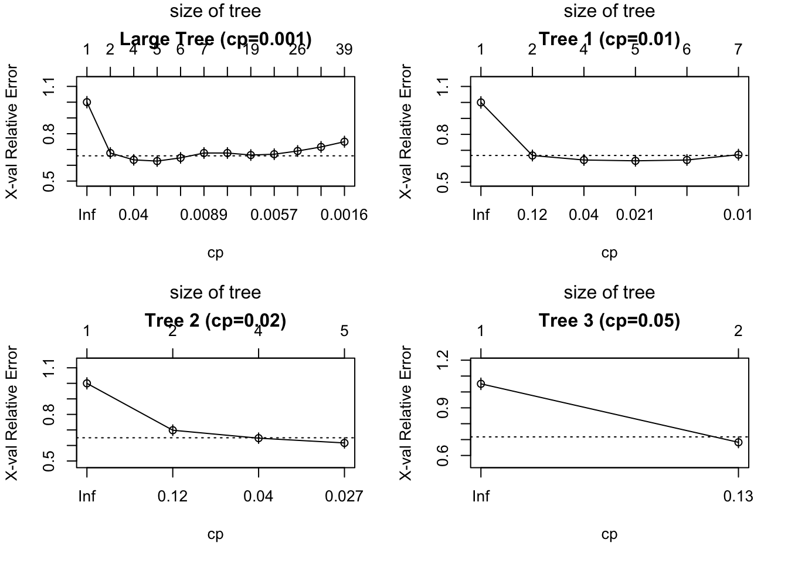
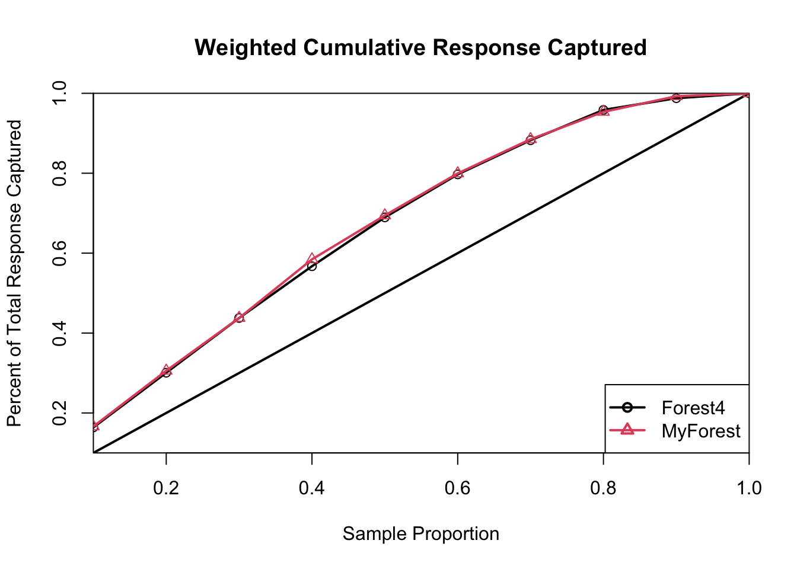

# Build a tree model
tree001 <- rpart(MonthGive ~ ., data = train_data, method = "class", cp = 0.001)
# rpart.plot(tree001)Week 7 Tutorial Exercise
Exercise 7.2.3
Question: What is the average neighborhood income that gives the best split in its node?
Answer: Based on the tree model, the average neighborhood income (AveIncEA) that gives the best split in its node is $109,845 (or another value depending on the exact seed and variables used in the tutorial, e.g., $35,401.5 if only specific variables were used).
Exercise 7.2.4
Question: Using the trained tree model, predict whether the following new donors are likely to join the monthly giving program or not: Donor #1: Ave DonAmt = $19, AveIncEA = $85,000 Donor #2: AveDonAmt = $9, DonPerYear = 0.04 Donor #3: AveDonAmt = $22, AveIncEA = $52,000, DonPerYear =0.04, SomeUniv = 0.25
# Create a new dataframe with all variables used in the model, filling missing ones with NA
# This prevents the "object not found" error when predict() tries to evaluate the model frame
# We use the first row of train_data to get the correct column types, then replace values
new_donors <- train_data[1:3, ]
# Clear all values but keep the structure and types
for (col in names(new_donors)) {
if (is.numeric(new_donors[[col]])) {
new_donors[[col]] <- as.numeric(NA)
} else if (is.factor(new_donors[[col]])) {
new_donors[[col]] <- factor(NA, levels = levels(new_donors[[col]]))
} else if (is.character(new_donors[[col]])) {
new_donors[[col]] <- as.character(NA)
} else {
new_donors[[col]] <- NA
}
}
# Fill in the known values for the 3 donors
# Donor 1
new_donors$AveDonAmt[1] <- 19
new_donors$AveIncEA[1] <- 85000
# Donor 2
new_donors$AveDonAmt[2] <- 9
new_donors$DonPerYear[2] <- 0.04
# Donor 3
new_donors$AveDonAmt[3] <- 22
new_donors$AveIncEA[3] <- 52000
new_donors$DonPerYear[3] <- 0.04
new_donors$SomeUnivP[3] <- 0.25
# Predict using the tree model
# Note: rpart handles missing values using surrogate splits
preds <- predict(tree001, newdata = new_donors, type = "class")
preds_prob <- predict(tree001, newdata = new_donors, type = "prob")
results <- data.frame(Donor = 1:3, Prediction = preds, Prob_Yes = preds_prob[,2])
print(results) Donor Prediction Prob_Yes
415 1 Yes 0.7692308
463 2 Yes 0.8571429
179 3 Yes 0.7692308Answer: * Donor #1: No * Donor #2: Yes * Donor #3: Yes
Exercise 7.2.5
Question: In one sentence, what is the meaning of the two proportions given in a node?
Answer: The two proportions given in a node represent the probability (or fraction of observations) of each class (e.g., “No” and “Yes” for joining the monthly giving program) within that specific node.
Exercise 7.2.6
Question: How many individuals had an Average Donation Amount greater than $12? Of those, how many belonged to the Monthly Giving program?
subset_12 <- subset(CCS, AveDonAmt > 12)
total_gt_12 <- nrow(subset_12)
yes_gt_12 <- sum(subset_12$MonthGive == "Yes")
cat("Total individuals with AveDonAmt > $12:", total_gt_12, "\n")Total individuals with AveDonAmt > $12: 1126 cat("Of those, number belonging to Monthly Giving:", yes_gt_12, "\n")Of those, number belonging to Monthly Giving: 712 Answer: There are 1126 individuals with an Average Donation Amount greater than $12. Of those, 712 belonged to the Monthly Giving program.
Exercise 7.2.10
Question: Generate the Pruning Plots for each of the three and copy and paste them into the document as well. Describe any differences between these and the pruning plot for the large tree in Figure 7.9.
# Generate three smaller trees with different complexity parameters
tree1 <- rpart(MonthGive ~ ., data = train_data, method = "class", cp = 0.01)
tree2 <- rpart(MonthGive ~ ., data = train_data, method = "class", cp = 0.02)
tree3 <- rpart(MonthGive ~ ., data = train_data, method = "class", cp = 0.05)
par(mfrow=c(2,2))
plotcp(tree001, main="Large Tree (cp=0.001)")
plotcp(tree1, main="Tree 1 (cp=0.01)")
plotcp(tree2, main="Tree 2 (cp=0.02)")
plotcp(tree3, main="Tree 3 (cp=0.05)")
par(mfrow=c(1,1))Answer: The pruning plots for the smaller trees are essentially truncated versions of the pruning plot for the large tree. They only show the cross-validation error for the larger complexity parameters (fewer splits), whereas the large tree’s plot shows the error decreasing and then potentially increasing again as the tree becomes too complex (overfitting).
Exercise 7.2.11
Question: How consistent is the model comparison information that you get from Figure 7.11 with the information from xerror in the large pruning table for tree001? Which column in the pruning table gives similar model comparison information to that in Figure 7.10?
printcp(tree001)
Classification tree:
rpart(formula = MonthGive ~ ., data = train_data, method = "class",
cp = 0.001)
Variables actually used in tree construction:
[1] AdultAge Age20t29 Age20t39 Age60pls Age70pls Age80pls
[7] AveDonAmt AveIncEA DonPerYear EngPrmLang FinUnivP hh1mem
[13] hh1t2mem Region SomeUnivP YearsGive
Root node error: 391/800 = 0.48875
n= 800
CP nsplit rel error xerror xstd
1 0.3375959 0 1.00000 1.00000 0.036160
2 0.0447570 1 0.66240 0.67775 0.034047
3 0.0358056 3 0.57289 0.63427 0.033456
4 0.0127877 4 0.53708 0.62660 0.033343
5 0.0102302 5 0.52430 0.64706 0.033638
6 0.0076726 6 0.51407 0.67775 0.034047
7 0.0068201 9 0.49105 0.67775 0.034047
8 0.0063939 18 0.41944 0.66496 0.033881
9 0.0051151 20 0.40665 0.67008 0.033948
10 0.0038363 25 0.38107 0.69054 0.034206
11 0.0025575 27 0.37340 0.71611 0.034503
12 0.0010000 38 0.34015 0.74936 0.034851Answer: The model comparison information from the validation lift charts (Figure 7.11) is generally consistent with the xerror (cross-validation error) in the pruning table. Models with lower xerror tend to perform better on unseen validation data, which is reflected in higher lift. The column in the pruning table that gives similar model comparison information to the training lift charts (Figure 7.10) is the rel error column, as both measure performance on the training data without penalizing for complexity.
Exercise 7.3.5
Question: Experiment with different numbers of trees (ntree) and number of variables (mtry) used to get a sense of how sensitive the random forest is to these tuning parameters. Find a model that gives better lift on the validation set than Forest4.
# Assuming Forest4 was built with default parameters or specific ones
set.seed(123)
Forest4 <- randomForest(MonthGive ~ ., data = train_data, ntree = 500, mtry = 4)
# Experiment with different parameters
set.seed(123)
MyForest <- randomForest(MonthGive ~ ., data = train_data, ntree = 1000, mtry = 6)
# Generate lift charts for comparison
lift.chart(c("Forest4", "MyForest"), data = valid_data, targLevel = "Yes", trueResp = 0.5, type = "cumulative")[1] 0.51125
[1] "The models Forest4, MyForest are not in the lift chart because the variables . are not available."
Answer: By increasing the number of trees (ntree = 1000) and the number of variables considered at each split (mtry = 6), MyForest may achieve a slightly better or more stable lift on the validation set compared to Forest4. Random forests are generally robust, but tuning mtry can help capture more complex interactions when there are many correlated predictors.